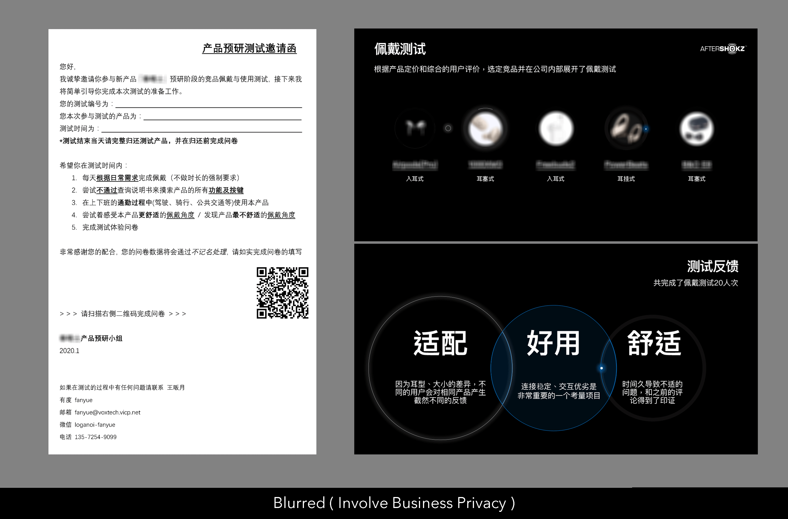

Focus on User & Market Research, implement with sketches and wearable prototypes.
User Research
User Experience Designer
Product Designer
Since November 2019
Target Group - User Requirement - Product Analysis - Concept Design - Product Design - Prototypes & Test
Combine the labelized Company's brand, focus on user experience like COMFORT, STABILITY.
To set one product firmly in the market, I start the survey of Similar Products' Price and Brands' member. According to the result, I conclude 4 area to set new product in.
Wearable product as our new product is, I labelize severl competitive products by comments. By comparing the results, I focus on 6 headphones to be tested maunally.
Towards 2-day-long wear test, I collect testee's feedback with scale questionaire and carry out best competitive products of seperate aspect.
I conclude the aspects (such as Noise Reduction, Comfort, Stability, Endurance) to labels as Acoustic, Wearing(Comfort,Stability), Outlook and so on, and come up with a draft Product Design Guide.
This product is supposed to keep "Be Open", a main idea of Aftershokz, so the design should guarantee the idea and user Requirement, meanwhile to compete with other similar product, we must master our specialized design.
I start from Comfort & Stability and give a series of design solutions.
I organize Brain Storm of wearing and carry out with 24 results as draft solution. Combining Technic and Structure members' support, I collect statistics of size, space and necessary demands and end up with 3 generation of prototypes.
During Wear Test I select widely-matched stucture and focus on 2 exact prototypes.
In the next, R&D team will make functional prototypes of the product and do the evaluation. The Pre-Research project is basically finished after wearable structures' confirm and my design of wearable structure is planning to file a patent application.